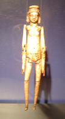
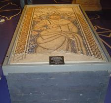
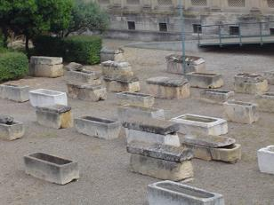
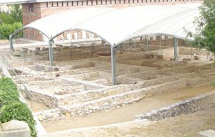

|
Las excavaciones arqueológicas realizadas entre 1923 y 1933, con
la construcción de la fabrica de tabacos propiciaron el descubrimiento del
cementerio paleocristiano que fue conservado parcialmente in situ dada su
importancia y relevancia. Situado en la ribera izquierda del río Fracolí al lado
de la antigua Vía Augusta en dirección a Saguntum. Es el cementerio
paleocristiano más importante del Mediterráneo Occidental.
|

 |
Esta necrópolis fue utilizada desde el asentamiento romano en la ciudad, hasta
final del siglo VII .
Podemos ver diferentes tipos de entierros, de huesas, de
ánforas, de tégulas, losas y sarcófagos. Se hallaron 2050 sepulcros. En su
interior aparecieron gran cantidad de enseres domésticos, destacando una muñeca
de marfil del siglo III o IV articulada y mosaicos de gran belleza como el de
Óptimo. La muñeca de Ivori es única en el mundo, de unos 23 cm con los brazos y
piernas articulados. El juguete infantil más antiguo de Europa
También se hallaron los restos de la planta de una basílica del siglo IV
o V
con influencias orientales donde se hallaron los sepulcros identificados como de
los santos mártires Fructuoso, Augurio y Eulogio.
|
|
En el material utilizado en la construcción de la necrópolis han
aparecido numerosos elementos que provienen de edificios o
construcciones de la ciudad, como sillares, molduras, mármoles, tegulas.....
La necrópolis no se puede visitar pero el recinto arqueológico
contiene un museo donde se pueden contemplar los sarcófagos, utensilios y otros
hallazgos que se descubrieron.
Entre las principales piezas del museo destacamos el sarcófago llamado de los
Leones, el del sacrificio de Isaac y el de San Pedro y San Pablo. En la primera
planta encontramos muchas muestras epigráficas romano-cristianas de los siglos
IV-V, algunos mosaicos, una serie de laúdes sepulcrales y diversas estatuas.
|
 |
|
 |
Por los restos inhumados y los estudios
realizados la población de Tarraco tenia una estatura media, los hombres median
entorno al 1,65m y las mujeres 1,54m, con gran predominio de la topología
mediterránea. En época altoimperial muchos ciudadanos pertenecían a la tribu
Galeria. Hay muchas inscripciones de libertos y destaca la emigración de
personas venidas de las provincias orientales y del interior de Hispania.
En el sector nororiental, detrás del
museo se aprecian los restos de una villa suburbana, con unas pequeñas termas,
cisternas y dependencias de uso domestico y residencial. Esta villa estuvo en
uso en los siglos II y III. Posteriormente sus restoS se aprovecharon en la
necrópolis.
|
|